Home
Filip Šturák
Gung1n0
Volám sa Filip Štuák ,venujem sa programovianiu v rôznych jazykoch so zameraním na backend development. Zaujímam sa o vedu a techniku. Tento web slúži ako moja osobná prezentácia a ukážka projektov, na ktorých som pracoval.
O mne
Som študent informatiky na vyokej škole VUT v Brne so záujmom o softvérový vývoj. Počas štúdia sa venujem rôznym technológiam od elektrotechniky až po software ,pričom sa snažím neustále zlepšovať svoje schopnosti v oblastiach softwaru. Vo voľnom čase rád sa zaujímam o rôzne programovacie jazyky, ako napriklád python, sledujem trendy v oblasti vedy a techniky a pracujem na vlastných projektoch.
Vzdelanie
Stredná Škola
Vyštudoval som Strednú priemyselnú školu Jozefa Murgaša v Banskej bystrici, kde som sa zoznámil s princípami rôznych technológií. To zahŕňa programovania statických a dynamických webových stránok, programovania v objektovo orientovaných jazykoch, prácu s linuxom, konfigurovanie sieťových parametrov ako aj na virtuálnych strojch, tak aj na fyzickým zariadeniach ako napríklad na prepínači, a podobné.

Vysoká Škola
V súčasnosti študujem na vysokej škole VUT v Brne so zameraním na informačné technológie, kde získavam základy programovania, databáz ,webových technológií a elektrotechniky. Počas štúdia som absolvoval viacero projektov zameraných na tvorbu webových stránok, aplikácií a programovania. Okrem školy sa vzdelávam aj samostatne.

Projekty
Školské projekty
IZP - Základy programování
Keyfilter
V tomto projekte sme sa zoznámili s jazykom C, cielom tohto projektu bolo implementuje systém automatického dopĺňania adries, podobne ako automatického dopĺňania textu. Ako voliteľný argument príkazového riadku prijíma hľadaný prefix, teda začiatok adresy, ktorú používateľ zadáva. Všetky vstupy sú normalizované — písmená sa prevádzajú na veľké a medzery sa nahrádzajú podčiarkovníkmi pre jednotné porovnávanie. Pred samotným vyhľadávaním sú zo zoznamu odstránené duplicitné adresy. Program následne porovná zadaný prefix s každou uloženou adresou a hľadá zhody. Ak sa nenájde žiadna zodpovedajúca adresa, vypíše "Not found". Ak sa nájde práve jedna adresa a zhoduje sa úplne celá, program vypíše "Found:" nasledované touto adresou. Keď viacero adries zdieľa rovnaký prefix, program zozbiera všetky možné nasledujúce znaky, zoradí ich abecedne a vypíše ich ako "Enable:" — teda informuje používateľa, ktoré znaky môže zadať ďalej. Toto správanie napodobňuje prediktívny text alebo autocomplete v GPS, kde systém zužuje možnosti s každým zadaným znakom. Celkovo program modeluje reálny prípad použitia, kde používateľ postupne píše adresu a systém ho naviguje k platnému cieľu.
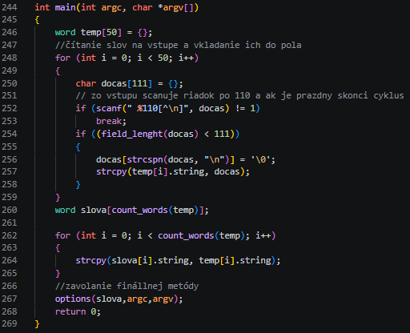
Práca s dynamickou pamäťou
Tento program implementuje hierarchické zhlukovanie sieťových tokov (Agglomerative Clustering) na základe ich vlastností. Zo súboru načíta záznamy o sieťových tokoch, kde každý tok obsahuje zdrojovú a cieľovú IP adresu, počet bajtov, trvanie, počet paketov a časový interval. Jadrom programu je dynamická správa pamäte pomocou malloc a realloc — každý cluster aj pole tokov sú alokované na halde počas behu programu. Pri spájaní clusterov sa používa realloc cez funkciu cluster_enlarge, ktorá dynamicky zväčšuje pole indexov vo vnútri clustera. Keď sa cluster odstráni po spojení, pamäť sa uvoľní pomocou free vo funkcii array_destroy_idx. Program taktiež dynamicky zmenšuje pole clusterov pomocou realloc vo funkcii reduce_clusters, aby nezaberal zbytočnú pamäť. Algoritmus opakuje spájanie dvoch najbližších clusterov — vzdialenosť sa počíta ako vážená euklidovská vzdialenosť medzi vlastnosťami tokov — až kým nezostane požadovaný počet clusterov. Všetka alokovaná pamäť je na konci programu uvoľnená cez funkcie array_destruct a array_destruct_clusters. Výsledkom je výpis clusterov s ID tokov, ktoré do nich patria.
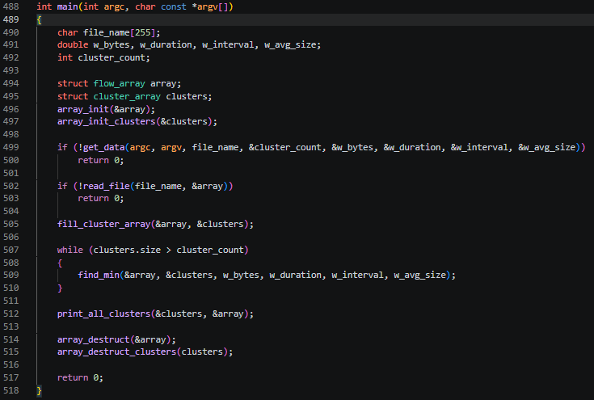
IUS - Úvod do softwarového inženýrství
Rejstřík církví
V tomto projekte som navrhoval ER diagram databázového systému RECESE pre Ministerstvo kultury. Identifikoval som hlavné entity systému — cirkev, osobu, štatutárny orgán, predpis a ustanovenie — a definoval som vzťahy medzi nimi. Riešil som evidenciu osôb, ktoré vystupujú v rôznych roliach — ako členovia prípravného výboru, zakladajúci členovia alebo členovia štatutárneho orgánu. Zaujímavou časťou bolo modelovanie štatutárneho orgánu, kde som musel rozlíšiť medzi individuálnym a kolektívnym typom a zároveň zachytiť históriu členstva pomocou časových období. Navrhol som tiež štruktúru vnútorných predpisov cirkvi, kde každý predpis obsahuje zoznam číslovaných ustanovení rôznych typov a môže byť nahradený novým predpisom. Dôležitou súčasťou bolo správne zachytenie väzby medzi návrhom na registráciu a konkrétnymi ustanoveniami predpisov. Dbal som na to, aby všetky obmedzenia zo zadania — ako unikátnosť názvu cirkvi, minimálny počet členov výboru či unikátnosť rodného čísla v rámci štátu — boli správne premietnuté do návrhu diagramu.
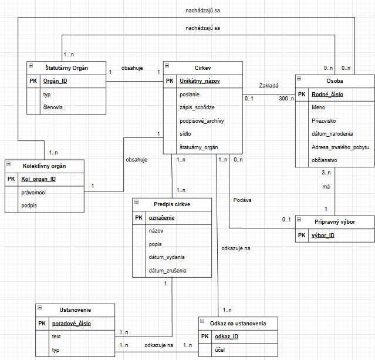
Upíří krevní banka
Tento projekt bol týmoví, a v tomto projekte sme navrhovali informačný systém pre upírskú krvnú banku. Identifikovali sa hlavné entity systému — dárcu, pobočku, pozvánku, odber, dávku, test a klienta — a definovali vzťahy medzi nimi. Riešila sa evidencia dárcov a ich pozvánie na konkrétnu pobočku, pričom systém sleduje, či dárca na pozvánku reagoval alebo nie. Zaujímavou časťou bolo modelovanie procesu odberu — dárca najprv podstúpi test spôsobilosti, a až po jeho úspešnom absolvovaní je mu odobratá jedna dávka krvi. Každá dávka následne prechádza vlastným testom, ktorý určuje jej vhodnosť na konzumáciu. Navrholi sme tiež štruktúru rezervácií, kde klienti môžu rezervovať zadané množstvo dávok na konkrétnej pobočke a na určitý dátum. Dbali sme na to, aby diagrami správne zachytávali väzby medzi pobočkami, skladovanými dávkami a rezerváciami jednotlivých klientov.Mojou úlohou bolo vytvoriť stavový diagram
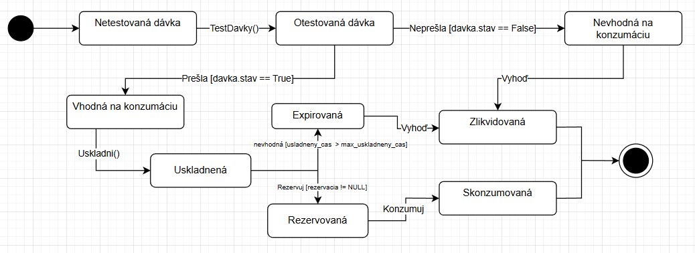
IOS - Operační systémy
Wana
V tomto projekte som implementoval shell skript na analýzu a filtrovanie záznamov webového servera. Skript dokáže spracovávať logy zo súborov aj zo štandardného vstupu, pričom podporuje aj komprimované súbory vo formáte .gz pomocou nástroja gzip. Implementoval som sadu filtrov, ktoré umožňujú obmedziť záznamy napríklad podľa IP adresy, časového rozsahu alebo URI. Nad filtrovanými záznamami skript vie vykonávať rôzne príkazy, ako napríklad výpis unikátnych IP adries alebo doménových mien získaných pomocou príkazu host. Zaujímavou časťou bola implementácia ASCII histogramov — histogram podľa IP adries zoradený od najčetnejších dotazov a histogram záťaže rozdelený do hodinových intervalov. Dbal som na to, aby skript fungoval na viacerých shelloch a operačných systémoch, a aby nepoužíval žiadne dočasné súbory ani nemodifikoval vstupné dáta.
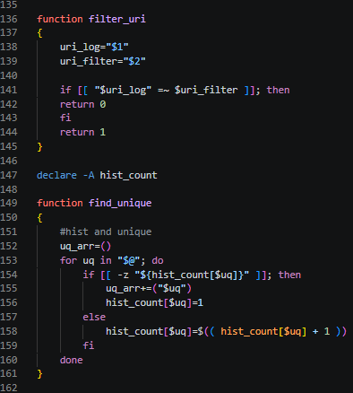
Horská dráha
V tomto projekte som implementoval simuláciu horskej dráhy pomocou procesov a semaforov v jazyku C. Vytváral som tri typy procesov — dispečera, vozíky a návštevníkov — ktoré bežali súbežne a museli byť správne synchronizované. Na synchronizáciu som používal semafory a zdieľanú pamäť, pričom som sa vyhýbal aktívnemu čakaniu. Riešil som frontu návštevníkov pred atrakciou a frontu voľných vozíkov, ktoré sa nesmeli predbehnúť na trati. Zaujímavou výzvou bola implementácia bezpečnostného časového odstupu medzi vozíkmi, ktorý kontroloval dispečer, a taktiež správne striedanie nástupu a výstupu cestujúcich. Dbal som na to, aby všetky procesy pri ukončení korektne uvoľnili semafory aj zdieľanú pamäť. Výstup každého procesu bol zapisovaný do súboru s globálne číslovanými akciami, čo vyžadovalo ďalšiu synchronizáciu pomocou zdieľaného čítača
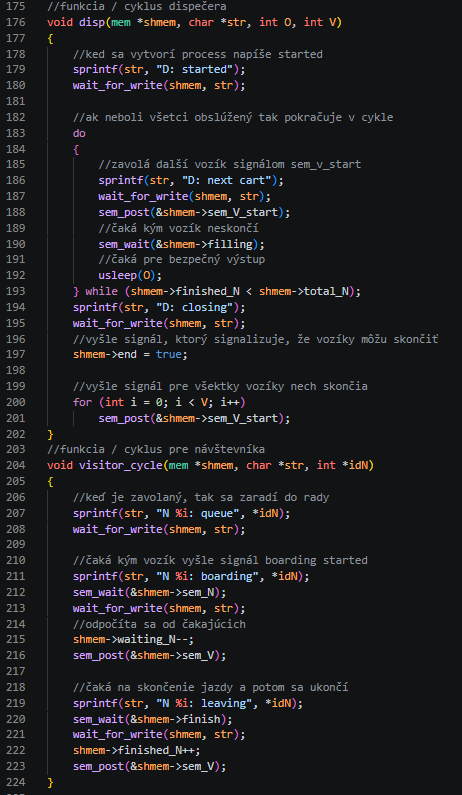
IZLO - Základy logiky pro informatiky
SAT solvery
V tomto projekte som implementoval kódovanie plánu opráv mesta do výrokovej logiky pomocou SAT solvera. Problém bol zadaný ako neorientovaný graf, kde uzly reprezentovali križovatky a hrany ulice, pričom každá ulica sa opravovala dva po sebe idúce dni. Moje úlohou bolo zakódovať jednotlivé podmienky do konjunktívnej normálnej formy (CNF) vo formáte DIMACS. Implementoval som podmienky ako napríklad to, že každá ulica musí byť opravená práve raz, že druhá fáza opravy musí nasledovať bezprostredne po prvej, a že v susedných uliciach nemôžu prebiehať opravy súčasne. Riešil som aj špeciálne podmienky týkajúce sa letiska a železničnej stanice — ulica medzi nimi musí byť opravená v posledných dvoch dňoch a ulice susediace s letiskom sa nesmú opravovať cez víkend. Zaujímavou výzvou bolo správne ošetriť okrajové prípady, ako napríklad poslednú fázu opravy v posledný deň. Celý problém som previedol na sústavu klauzúl, ktorú SAT solver vyhodnotil a vrátil platný plán opráv.
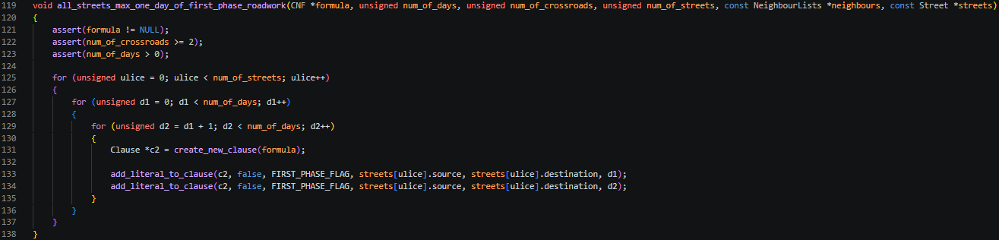
SMT solvery
V tomto projekte som formalizoval detekciu deadlocku v operačnom systéme pomocou SMT solvera v jazyku SMT-LIB 2. Problém bol zadaný ako systém procesov a zdrojov s relácikemi vlastníctva a čakania, pričom moja úloha bola tieto vlastnosti správne zakódovať do predikátovej logiky prvého rádu. Implementoval som podmienku exkluzívneho prideľovania zdrojov — žiadny zdroj nemôže byť súčasne vlastnený dvoma rôznymi procesmi. Zakódoval som aj podmienku konečného počtu procesov pomocou existenčných kvantifikátorov v teórii celočíselnej aritmetiky. Najnáročnejšou časťou bola formalizácia samotného deadlocku — množina procesov je v deadlocku vtedy, ak každý jej proces čaká na zdroj vlastnený iným procesom z tej istej množiny. Celé riešenie som zapisoval v prefixovom zápise formátu SMT-LIB s využitím univerzálnych a existenčných kvantifikátorov, booleovských spojok a celočíselných predikátov.
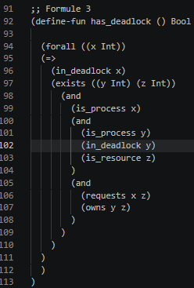
Osobné projekty
Unity TD hra
V tomto projekte som vytváral 2D Tower Defense hru v hernom engine Unity. Tému som si vybrali kvôli spoločnému záujmu o programovanie a videohry, pričom ma konkrétne fascinoval žáner tower defense a výzva spojenou s vyvážením herných mechaník. Hra bola vyvíjaná v jazyku C#, s ktorým som mal predošlé skúsenosti, a celý projekt bol realizovaný v 2D prostredí, čo nmi umožnilo sústrediť sa na hernú mechaniku a vizuálnu stránku bez zbytočnej komplexity 3D vývoja. Navrhol som herné prostredie vrátane rozmiestnenia miest pre veže a trasy, po ktorej sa pohybujú nepriatelia.
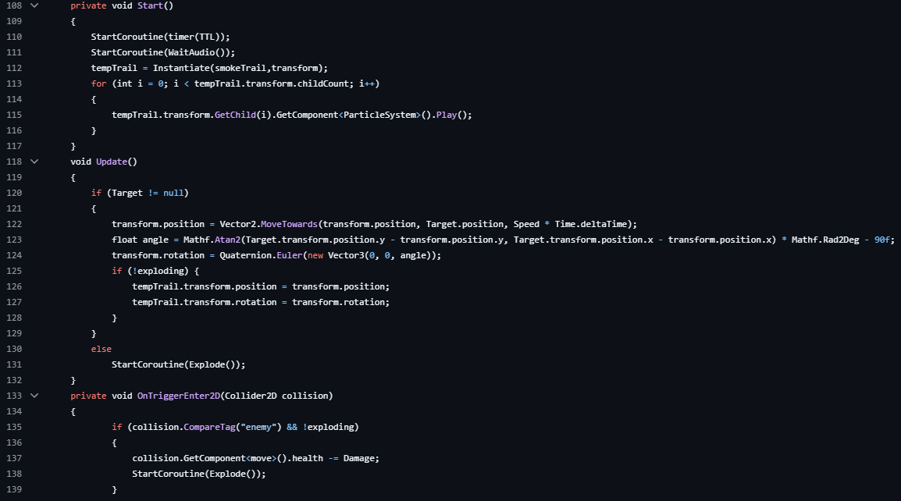
Implementoval som 5 typov obranných veží, pričom každá mala 3 vývojové štádiá s unikátnou grafikou a vlastnosťami. Každé vylepšenie veže sa vizuálne odlišovalo a prinášalo nové schopnosti. Súčasťou hry je tiež 5 typov nepriateľov, kde každý má rozdielne vlastnosti a rôznu mieru poškodenia hráča. Pre hráča som vytvoril 2 špeciálne schopnosti s rôznym časom obnovy a parametrami, aby hra zostala vybalansovaná.
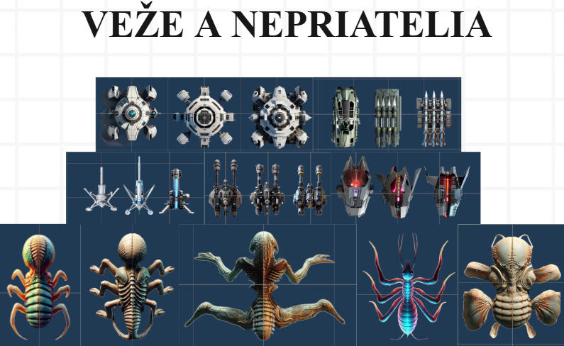
Kľúčovou súčasťou bola implementácia ekonomického systému — hráč začína s obmedzeným množstvom hernej meny, za zabitých nepriateľov získava odmeny a tie investuje do vylepšovania veží. Tento systém núti hráča strategicky premýšľať o každom rozhodnutí.
Celú grafiku som tvoril vlastnými silami s využitím generatívnej umelej inteligencie, čo mi umožnilo vytvoriť vizuálne prívetivý a unikátny štýl pre veže, nepriateľov, pozadie aj schopnosti. Hra bola taktiež ozvučená — pridal som hudobné pozadie, zvukové efekty pre schopnosti aj akcie veží. Na opätovné hranie motivuje hráčov implementovaný multiplayer mód. Projekt nám priniesol skúsenosti s riešením špecifických programátorských problémov, s ktorými som sa predtým nestretol, a výrazne mi rozšíril znalosti v oblasti herného vývoja.
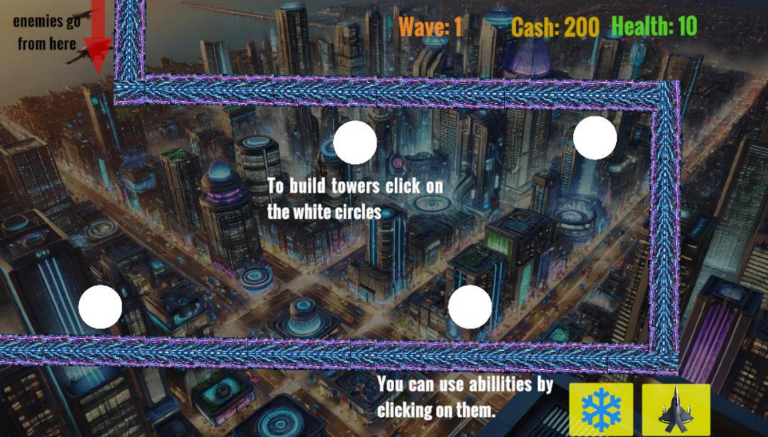
Vedomosti
- Ovládam základy webových technológií HTML, CSS a PHP
- Som mierne pokročilí v jazykoch C a C#
- Ovládam základy jazykov SMT, BASH, javascript, python a sql
- Viem konfigurovať L2 a L3 switche, routre, koncové zariadenia a Windows servery
- Dokážem zvárať optické káble, a krimplovať ethernetové káble
- Dokážem pracovať s Ubuntu a dokážem ho nastaviť na serverové používanie
- Dokážem vytvárať jednoduché dosky plošných spojov
- Dokážem vytvárať diagramy v jazyku UML